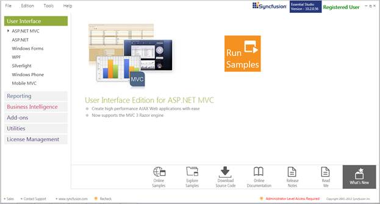
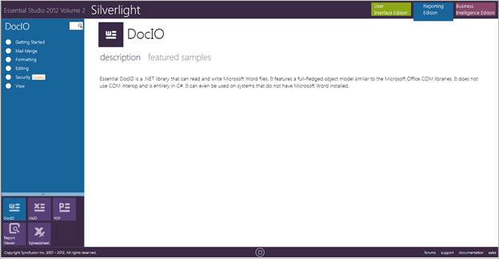
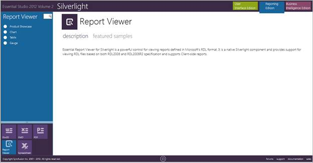

This section covers the location of the installed samples and describes the procedure to run the samples through the sample browser and online. It also lists the location of utilities, assemblies and source code.
Sample Installation Location
The Essential ReportViewer samples for Silverlight are installed under the following location, locally on the disk:
<InstalledLocation>\Syncfusion\EssentialStudio\<Version Number>\Samples\Silverlight\ReportViewer.Silverlight
Viewing Samples
To view the samples:
1. Click Start > All Programs > Syncfusion > Essential Studio <version number> > Dashboard. The Syncfusion Essential Studio Dashboard window is displayed. The UI samples are displayed by default.

Figure 3: Syncfusion Essential Studio Dashboard
2. Select Reporting edition.

Figure 4: Syncfusion Essential Studio Reporting Edition Dashboard
3. Click Silverlight.
Note: You can view the samples using three ways:
· Run Samples - View the locally installed Reporting Edition Silverlight samples using the sample browser
· Online Samples - View the online samples of Silverlight
· Explore Samples - Locate the samples on the disk
4. Click Run Samples link. The Syncfusion Essential Studio Silverlight Reporting Edition sample browser is displayed.

Figure 5: Reporting Edition Silverlight Sample Browser
5. Select Report Viewer from the bottom-left pane to view the samples of Report Viewer.

Figure 6: Report Viewer Sample
6. Select any sample and browse through the features.